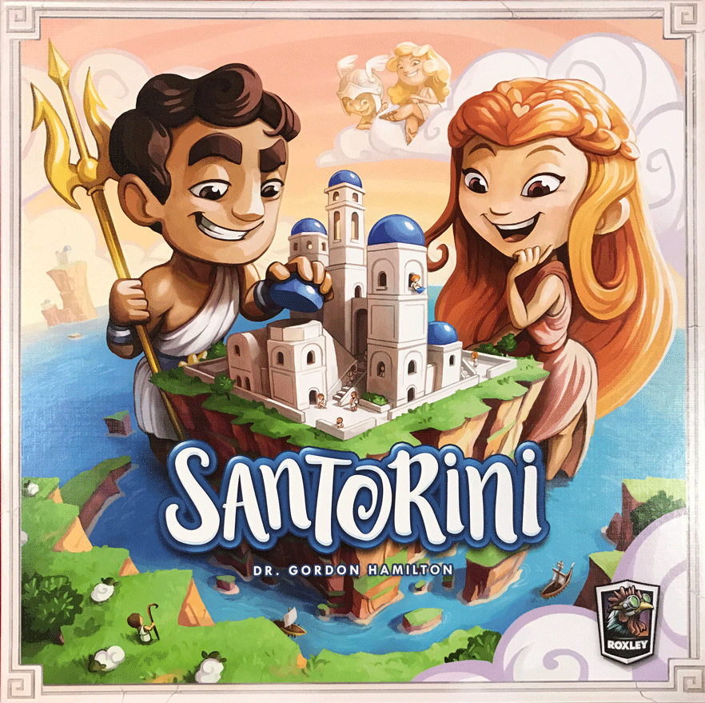
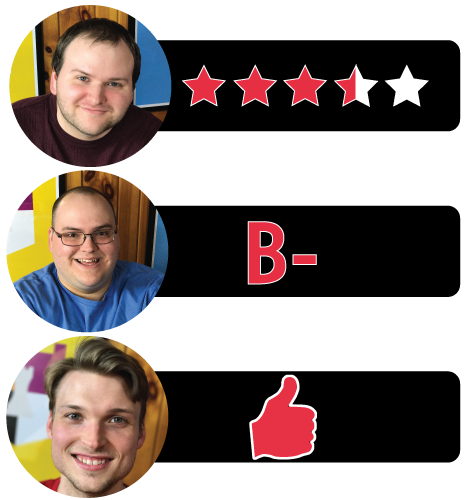

In this Santorini review, Board Crazy examines the board game designed by Dr. Gordon Hamilton and published by Roxley Game Laboratory. In Santorini, the players recreate the the charming little island of Santorini. The first person to the third level wins the game! Keep reading to see our Santorini review…

D reviews Santorini
 I don’t practice Santorini. But maybe I should, because I know I’m missing some hidden depths to it whenever I play the game. In our video
I compare it to tic-tac-toe, which is reductive; there is clearly more
going on in even the base version of Santorini than that
paper-and-pencil classic. Still, my strategy when it comes to this game
usually seems to be to just sort of move and build in isolation until my
opponents’ actions force me to focus on stopping them. It’s more about
reaction than action – especially in a three player game, which I’m most
used to – because there isn’t really enough room on the board to come
up with a plan and execute it without someone throwing, like, six
wrenches into it the second you dare to move up a level.
I don’t practice Santorini. But maybe I should, because I know I’m missing some hidden depths to it whenever I play the game. In our video
I compare it to tic-tac-toe, which is reductive; there is clearly more
going on in even the base version of Santorini than that
paper-and-pencil classic. Still, my strategy when it comes to this game
usually seems to be to just sort of move and build in isolation until my
opponents’ actions force me to focus on stopping them. It’s more about
reaction than action – especially in a three player game, which I’m most
used to – because there isn’t really enough room on the board to come
up with a plan and execute it without someone throwing, like, six
wrenches into it the second you dare to move up a level.
Artemis – “Goddess of the Hunt”
Your Move: Your worker may move one additional time, but not back to its initial space.
Maybe it’s the art. This edition of Santorini, published by Roxley, is nothing if not charming. The colors are vibrant and the cartoon Greek gods on the cards are cute interpretations. The stackable building pieces are simple in their design, but a fun feature. It doesn’t look like a deep, strategic game that was designed by a doctor and developed over thirty years. What it does look like is a game designed for children. Indeed, the basic rules are simple enough that children can easily play it and have a good time (2nd Grade D would have gladly taken this over Connect Four), but I suspect that that’s also a big reason why the game has not completely engaged me. It feels like I’m playing chess with checker pieces. I realize that this is really a shortcoming of my own rather than one of the game, but at the same time it should be the job of the game to make me want to discover its complexities. Instead, I’m perfectly happy to just go with the flow.
Simple and Advanced Gods
I’m also having a few second thoughts about the use of the aforementioned cards, which is a feature we praise at the end of our video. They’re mandatory in three- and four-player games and I can see how the additional strategies are useful in making those games more fun and less frustrating, but the more I think about them the less I like them. There are thirty god cards to choose from in the standard game: ten simple gods and twenty advanced gods. The simple ones are (logically) pretty mild and therefore pretty well-balanced overall, with some cards being more effective early in a game and others more effective once the board is more crowded. I still think it’s wise for the “challenger” to select the cards carefully, but choosing any of the ten should provide a decent game. The advanced ones are a bit more of a mixed-bag and there are some that I would probably ban from use. Zeus, for example, lets your worker build a block under itself after it moves. I realize that Zeus is Zeus and all, but that’s just unfair. Overall they’re not bad per se, but they alter the core game too much for my liking.
All of that being said, I do like this game. Actually, I feel like I’ve come to sort of a personal epiphany regarding this game as I’ve written down all of these thoughts I have. Santorini is good, but I would mainly recommend it as a two-player game without the use of the god cards. That’s the way the game was designed to be played and the strategy is deepest and purest in that form. The god cards are more of a gimmick than an improvement and playing with more than two players really makes the game more of a crapshoot. The game we play in the video is a typical one, where the winner is determined by a third party rather than an act of skill or strategy. And while that means you don’t technically need to buy the boxed game to get the best experience (playing with paper-and-pencil is perfectly viable), I would still recommend the purchase because the components are attractive, fun to interact with and generally well-made. Would I rather play Santorini than chess? Probably not, but if you’re looking for something that you can legitimately set up and play in around half an hour, you’d be hard-pressed to find many better games.
Will reviews Santorini
One of the well-crafted female workers
 First
off, I wasn’t sure how much I’d like a game like Santorini. The rules
are rather simple, the artwork is childlike, and the overall design
initially didn’t strike me as particularly impressive. However, the more
I played Santorini, the more I realized – there’s a simple
sophistication to it. For instance, the God cards are well balanced and
feature differing advantages. Sure, there are a few that may seem more
desirable, but experienced players will have few issues using some of
the less sought-after cards. And then there’s the board and the building
pieces themselves. What surprised me most about them is how well made
they are – in fact, all of the plastic pieces are not only sturdy,
but they fit into one another almost perfectly. Solid craftsmanship in
the board gaming industry is not as common as one would think, so it’s a
pleasant surprise to play a game so well built. All in all, I enjoyed
Santorini more than I thought I would, despite its shallow gameplay.
First
off, I wasn’t sure how much I’d like a game like Santorini. The rules
are rather simple, the artwork is childlike, and the overall design
initially didn’t strike me as particularly impressive. However, the more
I played Santorini, the more I realized – there’s a simple
sophistication to it. For instance, the God cards are well balanced and
feature differing advantages. Sure, there are a few that may seem more
desirable, but experienced players will have few issues using some of
the less sought-after cards. And then there’s the board and the building
pieces themselves. What surprised me most about them is how well made
they are – in fact, all of the plastic pieces are not only sturdy,
but they fit into one another almost perfectly. Solid craftsmanship in
the board gaming industry is not as common as one would think, so it’s a
pleasant surprise to play a game so well built. All in all, I enjoyed
Santorini more than I thought I would, despite its shallow gameplay.
Speaking of gameplay, it’s not necessarily a weakness if you’re looking for a quick, breezy game to play with a friend or two. Objectively, the gameplay itself is actually well balanced and pretty fun – it’s just not for me as much as other kinds of games. This is my opinion, and this opinion is definitely affected by my preferences when it comes to board games. Regardless, there are some flaws in the design of Santorini, especially from a tactical aspect. After playing several rounds of the game, I began to notice that sealing oneself off in the corner of the board is the way to win. Granted, players can do their darndest to prevent
The game board and the different types of game pieces
their opponents from winning that way, but almost every time someone will forget to check and oops, the game is over. In addition to that flaw, the vertical nature of Santorini can often make it difficult for players to see every piece on the board. In our gameplay video, I actually forgot where a certain piece was because buildings had gradually enveloped it. To counter this, players will have to stand up or move around to get a better vantage. For lazy gamers like me, that is definitely a weakness in design, but maybe I’m splitting hairs.
So those are my thoughts on Santorini, a brief, lighthearted game for small groups of people. I acknowledge that my preference for meatier board games affected my opinions, but I can still objectively state that this game is pretty sound. Santorini is extremely well constructed and thoughtfully designed – there’s a subtle bit of elegance about the gameplay, which will sneak up on those who buy it. While it is replayable, there are a couple game-ending scenarios that occur too often, which is a shame. In the end though, it’s a commendable little board game.
Graham reviews Santorini
Apollo – “God of Music”
Your Move: Your Worker may move into an opponent Worker’s space by forcing their Worker to the space yours just vacated.
 When
I first came across Santorini, I was excited to play it. From
appearance alone, it looked like a fun and quick-moving game that could
be played in less than 30 minutes. Unlike so many board games today,
Santorini didn’t come with a million rules, game mechanics, and pieces –
things that are designed to make a game competitive and replayable but
often make it tiresome. Instead, Santorini accomplishes a lot with only 5
different game pieces: The Builders, The God Cards, The Building Bases,
The Building Middles, The Building Tops, and the Domes. And there are
only two different actions: build and move. That’s it.
When
I first came across Santorini, I was excited to play it. From
appearance alone, it looked like a fun and quick-moving game that could
be played in less than 30 minutes. Unlike so many board games today,
Santorini didn’t come with a million rules, game mechanics, and pieces –
things that are designed to make a game competitive and replayable but
often make it tiresome. Instead, Santorini accomplishes a lot with only 5
different game pieces: The Builders, The God Cards, The Building Bases,
The Building Middles, The Building Tops, and the Domes. And there are
only two different actions: build and move. That’s it.
Tactically speaking, Santorini removes luck from the game, which forces players to outwit their opponents with strategy alone. Adding to the strategy are the God cards, which are really the driving force of its replayability. There are tons of different god cards with all different kinds of abilities like Apollo, who allows you to switch places with an adjacent enemy and ruin their chance at victory. Did I mention my favorite part of the game is its competitive nature? In Santorini, you are never out of it and you are never safe. The rules require you to move AND build, and if you are unable to, then you lose. This forces players into interesting dilemmas; for example, having to decide which opponent they want to assist with victory (Thanks, Will!). It also means there is ALWAYS a winner. No split victories or 2nd and 3rd place – only winners and losers. On top of all of this, the art is unique and pleasing, and the 3D element provides a level of immersion that is often missing from board games. Thinking about it, my one knock on the game is that without the God cards, the game gets old quickly. Regardless, I’d honestly recommend Santorini to anybody.

Leave a Reply
You must be logged in to post a comment.